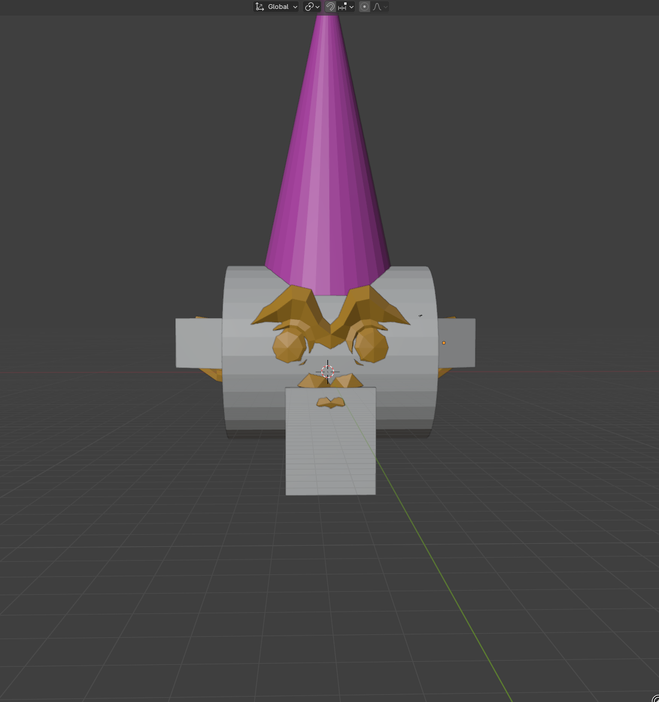

Marching Cubes devlogPhysics |
Main page |
| Updated: 9/2024 |
Obviously I need physics for my game engine. Since I’m doing everything on my own, I can make this too. I’ve always found physics pretty interesting and I know a lot about it, so why not?
I started by getting the deltatime of every frame, just like I did in my Particle simulator, which also uses physics. Then, I added some basic gravity to the acceleration:
accel += glm::vec3(0.0f, -9.8f, 0.0f) * deltaTime;As well as adding some acceleration depending on the key pressed, to enable movement.
At the end, acceleration was applied by simply doing
vel += accel * deltatime;
accel = glm::vec3(0.0f);
pos += vel;This worked to make the player move and fall. I then added a check for voxels below the player, setting vertical velocity and acceleration to 0 to prevent falling through the ground. Early results:
Then, I decided I needed friction when the player was on the ground. This was much harder than I thought, and I ended up making a jumbled mess of forces, accelerations and velocities, to in the end not even use forces at all and just to
vel -= (vel * friction_coeff) * deltatime;I then wanted to add actual colisions with the terrain, and this is where everything fell apart. Where do I even begin? How do I know the player is touching the ground? When he is at a distance of 0.1 to it? or 0.05? How do I get this distance? After much consideration I discovered there is A LOT to a physics engine, especially a 3D one, and I should just use an already existing one.
The most well known ones are either paid, closed source, or both. I knew NVIDIA PhysX was a thing, so I tried to look into it, but it didn’t look clean, fast, easy to use or closs platform/hardware. Ease of use was a big deal, I didn’t even know if I was free to use it in my game, or where I could get the code/binaries. As a complete beginner with no idea of anything, it was a scary mess.
After some digging, I found some people saying great things about Jolt Physics. It was used by Horizon Forbidden West, and was MIT licensed, so everything looked good.
After looking at the examples, I not very quickly made the setup for the physics system, with no physics actually happening. The learning process was a bit of a pain. There is a lot of documentation, and the code itself (mainly the headers, which is what I am concerned with) is very readable, but… where do I even start to make physics things hapen? There were many concepts I just did not know, and I quickly realized this was not exactly meant for complete beginners.
After having gone through lots of growing pains, I will digest most of these concepts just for you:
I know these are vague, but if you know what you want to do, the docs are pretty good. Read them.
And even some notes about its architecture:
I will expand these as I learn more, or as I remember more things to add.
After much segfaulting, I figured what I need is for each chunk to have a body, and its shape should be a MeshShape corresponding to the triangles of the terrain. For now, whenever the terrain gets updated, I have to completely rebuild the physics mesh, but whatever.
You don’t even need a code example for this. Just create triangle, push into array, and make a shape out of it. Anyway, making shapes can be confusing so here is an example that works:
Note that this is not perfect, and raises many questions. Shape vs ShapeSettings? What is SetEmbedded()??? This code worked so I just left it as is. Here is a simpler example of making a shape that is more complex, a CompoundShape:
JPH::Ref<JPH::StaticCompoundShapeSettings> compound_shape = new JPH::StaticCompoundShapeSettings;
// add a box
JPH::Vec3 position_box = ...;
JPH::Quat rotation_box = ...;
JPH::Vec3 scale_box = ...;
compound_shape->AddShape(
position_box,
rotation_box,
new BoxShape(scale_box)
);
// add a sphere
float height_cylinder = ...;
float radius_cylinder = ...;
JPH::Vec3 position_cylinder = ...;
JPH::Quat rotation_cylinder = ...;
compound_shape->AddShape(
position_cylinder,
rotation_cylinder,
new CylinderShape(height_cylinder, radius_cylinder)
);
ShapeSettings::ShapeResult shapeResult = compound_shape->Create();
// final reference to the actual shape
Ref<JPH::Shape> res = shapeResult.Get();
I will also give you a quick example of creating a body, given a shape:
JPH::Body *createBodyFromShape(JPH::RefConst<JPH::Shape> shape, const JPH::Vec3 &translation, const JPH::Quat &rotation) {
BodyCreationSettings bodySettings(shape, translation, rotation, EMotionType::Dynamic, Layers::MOVING);
BodyInterface &bodyInterface = getBodyInterface();
Body* body = bodyInterface.CreateBody(bodySettings);
bodyInterface.AddBody(body->GetID(), EActivation::DontActivate);
return body;
}Anyway, there are lots of examples you can follow in the code and the docs.
All you have to do is make one body per entity, make it dynamic and in the right layer, and activate it. Gravity is applied automatically, and to render, you can get the transform matrix straight out of the body using body->GetWorldTransform(). However this gives you a JPH::RMat44. I didn’t have the patience to see what this format was vs the glm::mat4, so here is a dirty manual conversion:
JPH::RVec3 position = body->GetPosition();
JPH::Quat rotation = body->GetRotation();
glm::mat4 translationMatrix = glm::translate(glm::mat4(1.0f), glm::vec3(position.GetX(), position.GetY(), position.GetZ()));
// use glm::rotate instead???
glm::quat glmQuat(rotation.GetW(), rotation.GetX(), rotation.GetY(), rotation.GetZ());
glm::mat4 rotationMatrix = glm::toMat4(glmQuat);Like I said somewhere in another post, I use assimp to load my models. How am I going to load the hitbox? I need to make shapes, like shperes, boxes, etc, and assimp can’t really do that. Since I have a finite lifespan and loading is done only once, I decided to go the dirty route. I don’t have time to make my own hitbox editor, so I just made it into a json file. This is the file for the cone monkey:
[
{
"type": "cylinder",
"position": [
0.0,
1.71581,
0.0
],
"rotation": [
0.0,
0.0,
0.707107,
0.707107
],
"radius": 7.5552,
"height": 8.59692
},
{
"type": "box",
"position": [
-10.8345,
2.46158,
-3.56768
],
"rotation": [
0.0,
-0.241777,
0.0,
0.970332
],
"scale": [
2.62507,
2.25182,
1.3427
]
},
{
"type": "box",
"position": [
10.8345,
2.46158,
-3.56768
],
"rotation": [
0.0,
0.241777,
0.0,
0.970332
],
"scale": [
2.62507,
2.25182,
1.3427
]
},
{
"type": "box",
"position": [
0.0,
-5.09679,
5.67721
],
"rotation": [
0.0,
0.0,
0.0,
1.0
],
"scale": [
3.58595,
4.27682,
2.2315
]
}
]And here is it visualized:

I also made it so that if a json file is not provided, I just make a convex hull of the entire mesh, and it worked fine.
If you do something like this, keep in mind extracting these from blender will cause you great pain as you will inevitably forget blender is y-up and you might do quats like xyzw while it does wxyz. To debug this, see the next topic
(segfaulted, later found out mesh vs mesh collision doesn’t work)
Jolt provides ways of rendering the physics objects for debug purposes. It actually proposes you implement a pretty complete interface, enabling shadows and LODs. I do not have the patience for this, and just used DebugRendererSimple. In the source code you have an example of how you should use it, it is very hidden and actually pretty hard to find it, so you’re welcome.
The bare minimum you have to do is implement
#include <Jolt/Renderer/DebugRendererSimple.h>
...
virtual void DrawTriangle(JPH::RVec3Arg inV1, JPH::RVec3Arg inV2, JPH::RVec3Arg inV3, JPH::ColorArg inColor, ECastShadow inCastShadow) override;and draw all the triangles however you want. Your renderer needs to be registered with
DebugRenderer::sInstance = pointer_to_your_renderer;And you need to call
JPH::BodyManager::DrawSettings settings = JPH::BodyManager::DrawSettings();
Phys::getPhysSystem()->DrawBodies(settings, Phys::getPhysRenderer());For jolt to generate your vertices. There are also many settings but I use none of them.